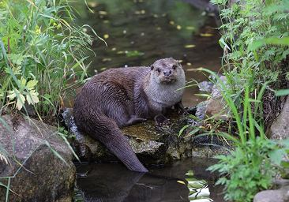
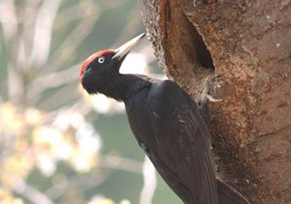
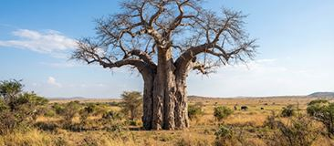
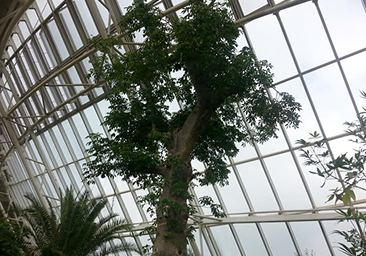
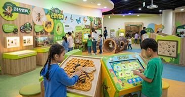

핵심 기능 · 생태 탐험
생태계 → 생물 → 전시·교육·연구,
생태계 → 생물 → 전시·교육·연구,
하나로 이어지는 탐험
인터랙티브 생태지도에서 기후대를 선택하고, 지도를 확대·축소·드래그하며 서식 생물을 살펴보세요. 3D 동물에 마우스를 올리면(Hover) 반응하고, 클릭하면 관련 전시·교육·연구 콘텐츠로 이어집니다.
열대 생태계 · 3D 지도 확대·축소·드래그

열대우림 생태계
지구 생물종의 절반 이상이 서식하는 생명의 보고. 마우스를 올리면 캐노피의 동물이 미세하게 반응합니다.
생태계→수달→전시·연구


사막 생태계

사막·사바나 생태계
극한의 건조 환경에서 살아가는 생명의 전략을 3D 오브젝트로 만나보세요.
생태계→바오밥나무→연구자료

온대 생태계
온대 낙엽수림 생태계
사계절이 뚜렷한 한반도의 숲. 가족 단위 탐험 프로그램과 연결됩니다.
생태계→참나무숲→교육 프로그램

인터랙티브 생태지도
지도를 드래그하고 확대해
지도를 드래그하고 확대해
기후대별 생태계를 선택하세요
5대 기후대를 한곳에서 만나는 국립생태원의 상징, 에코리움. 구역을 클릭하면 해당 생태계의 대표 생물과 연계 콘텐츠로 이동합니다.

드래그하여 탐색하기
5대 기후대를 통해 전 세계의 생태계를 한곳에서 만나보세요.
확대 · 축소 · 드래그
지도를 자유롭게 움직이며 원하는 구역을 자세히 살펴볼 수 있어요.
3D 동물 Hover·클릭
동물에 마우스를 올리면 반응하고, 클릭하면 정보 카드가 나타납니다.
연계 콘텐츠 연결
생태계 → 생물 → 전시·교육·연구까지 자연스럽게 이어지는 탐험 동선.
관람 및 체험 안내
가족과 함께하는